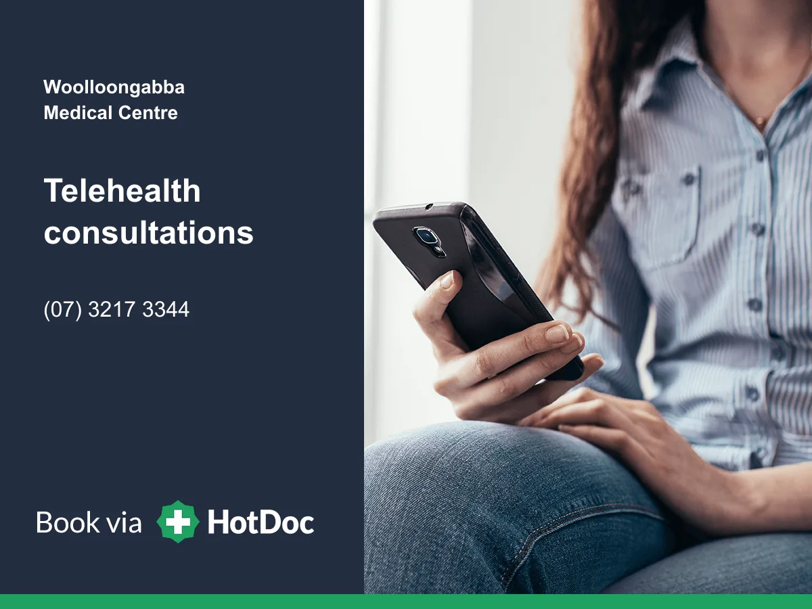

When telehealth may be suitable
Telehealth consultations may be available for eligible patients when remote care is clinically appropriate. Appointment availability may vary by practitioner, appointment type and current practice arrangements.
Telehealth is often used by existing patients. Depending on the clinical context, it may support:
- Follow-up consultations
- Discussion of results and next steps
- Medication reviews where clinically appropriate
- Healthcare planning when a physical examination is not required
GP discretion applies. A practitioner may recommend an in-person consultation if examination, testing or treatment cannot be provided safely by phone or video.
Convenience does not replace clinical judgement. If your doctor needs to examine you, you may be asked to attend the medical centre.
Appointments
Booking telehealth
Where a telehealth appointment is offered, book through the available HotDoc appointment options or call reception on (07) 3217 3344 if you are unsure which appointment type is suitable.
For booking help and HotDoc guidance, see Booking & HotDoc.
Medicare eligibility
For general practice telehealth, Medicare eligibility can depend on your relationship with our practice. Current Medicare rules allow GP telehealth items when, for example, you are registered in MyMedicare with our practice or you have had an eligible face-to-face Medicare service with us within the previous 12 months. Other rules and exemptions can apply.
If you are unsure whether your telehealth consultation will be Medicare eligible, ask reception before the appointment. See also Medicare and Bulk Billing.
Preparing for the appointment
- Keep your phone nearby and make sure we have your correct contact number.
- Choose a private place where you can speak comfortably.
- For video appointments, use a device with a working camera, microphone and reliable internet connection.
- Have your medication list or relevant information available if the consultation relates to ongoing care.
Prescriptions after telehealth
Where clinically appropriate, an electronic prescription may be issued as an SMS or email token that you can present to a participating pharmacy. Prescribing remains a clinical decision and may not be suitable for every medicine or every patient.
For repeat prescription requests outside a consultation, see Repeat Scripts and our New Patient Prescribing guidance where relevant.
Telehealth fees
Where a telehealth consultation is privately billed, our current fee schedule lists a weekday telehealth consultation at $65 with a Medicare rebate of $42.85, and a weekend telehealth consultation at $80 with a Medicare rebate of $42.85. Video telehealth items are also listed on the current fee schedule.
Medicare eligibility and the final billing arrangement depend on the appointment and current Medicare rules. Reception can confirm this before your consultation. Related fee information is also on Fees & Billing.
Patient questions
Telehealth questions
Are telehealth consultations available?
Telehealth consultations may be available for eligible patients when clinically suitable. Appointment availability can vary by practitioner, appointment type and current practice arrangements.
When can telehealth be useful?
Telehealth may be suitable for selected follow-up care, results discussions, medication reviews where clinically appropriate, and healthcare planning when a physical examination is not required. GP discretion applies.
Who is telehealth usually for?
Telehealth is often used by existing patients for suitable follow-up care. Medicare eligibility can depend on your relationship with the practice. Ask reception if you are unsure.
What happens if my doctor needs to examine me?
If the concern cannot be safely assessed remotely, you may be asked to attend the medical centre or another appropriate in-person service.
Can prescriptions be issued after telehealth?
Prescribing depends on the medication, your history and the doctor’s assessment. Some medicines require further review or an in-person consultation.


This page provides general patient information about telehealth at Woolloongabba Medical Centre. It does not replace individual medical advice. Telehealth is not an emergency service. For a life-threatening emergency, call Triple Zero (000).